链路层寻址和ARP
MAC地址：也称LAN地址、物理地址，对大多数局域网，MAC地址长度为6字节，共计2的48次方个可能的地址，通常用十六进制表示法，IEEE管理者MAC地址的分配。
当适配器收到一个帧时，将检查该帧中的目的MAC地址是否与自己的MAC地址匹配，如果匹配，该适配器提取出分装的数据报，并将该数据报沿协议栈向上传递。如果不
匹配，该适配器丢弃该帧，不向上传递该数据报。
有时发送适配器的确要让局域网上所有的其他适配器来收到并处理它打算发送的帧。发送适配器在该帧的目的地址字段中插入一个特殊的MAC广播地址。对于使用6字节的局域网，广播地址是48个 连续的1组成的字符串（十六进制：FF-FF-FF-FF-FF-FF）
有时发送适配器的确要让局域网上所有的其他适配器来收到并处理它打算发送的帧。发送适配器在该帧的目的地址字段中插入一个特殊的MAC广播地址。对于使用6字节的局域网，广播地址是48个 连续的1组成的字符串（十六进制：FF-FF-FF-FF-FF-FF）
ARP地址解析协议：网络层地址和链路层地址之间转换；ARP只为在同一个子网上的主机和路由器接口解析IP地址。
每一个主机都设有一个 ARP 高速缓存(ARP cache)，里面有所在的局域网上的各主机和路由器的 IP 地址到硬件地址的映射表。
当主机 A 欲向本局域网上的某个主机 B 发送 IP 数据报时，就先在其 ARP 高速缓存中查看有无主机 B 的 IP 地址。如有，就可查出其对应的硬件地址，再将此硬件地址写入 MAC 帧，然后通过局域网将该 MAC 帧发往此硬件地址。

为了减少网络上的通信量，主机 A 在发送其 ARP 请求分组时，就将自己的 IP 地址到硬件地址的映射写入 ARP 请求分组。
当主机 B 收到 A 的 ARP 请求分组时，就将主机 A 的这一地址映射写入主机 B 自己的 ARP 高速缓存中。这对主机 B 以后向 A 发送数据报时就更方便了。
ARP 是解决同一个局域网上的主机或路由器的 IP 地址和硬件地址的映射问题。
如果所要找的主机和源主机不在同一个局域网上，那么就要通过 ARP 找到一个位于本局域网上的某个路由器的硬件地址，然后把分组发送给这个路由器，让这个路由器把分组转发给下一个网络。剩下的工作就由下一个网络来做。
从IP地址到硬件地址的解析是自动进行的，主机的用户对这种地址解析过程是不知道的。
只要主机或路由器要和本网络上的另一个已知 IP 地址的主机或路由器进行通信，ARP 协议就会自动地将该 IP 地址解析为链路层所需要的硬件地址。
每一个主机都设有一个 ARP 高速缓存(ARP cache)，里面有所在的局域网上的各主机和路由器的 IP 地址到硬件地址的映射表。
当主机 A 欲向本局域网上的某个主机 B 发送 IP 数据报时，就先在其 ARP 高速缓存中查看有无主机 B 的 IP 地址。如有，就可查出其对应的硬件地址，再将此硬件地址写入 MAC 帧，然后通过局域网将该 MAC 帧发往此硬件地址。
为了减少网络上的通信量，主机 A 在发送其 ARP 请求分组时，就将自己的 IP 地址到硬件地址的映射写入 ARP 请求分组。
当主机 B 收到 A 的 ARP 请求分组时，就将主机 A 的这一地址映射写入主机 B 自己的 ARP 高速缓存中。这对主机 B 以后向 A 发送数据报时就更方便了。
ARP 是解决同一个局域网上的主机或路由器的 IP 地址和硬件地址的映射问题。
如果所要找的主机和源主机不在同一个局域网上，那么就要通过 ARP 找到一个位于本局域网上的某个路由器的硬件地址，然后把分组发送给这个路由器，让这个路由器把分组转发给下一个网络。剩下的工作就由下一个网络来做。
从IP地址到硬件地址的解析是自动进行的，主机的用户对这种地址解析过程是不知道的。
只要主机或路由器要和本网络上的另一个已知 IP 地址的主机或路由器进行通信，ARP 协议就会自动地将该 IP 地址解析为链路层所需要的硬件地址。
使用 ARP 的四种典型情况
发送方是主机，要把IP数据报发送到本网络上的另一个主机。这时用 ARP 找到目的主机的硬件地址。
发送方是主机，要把 IP 数据报发送到另一个网络上的一个主机。这时用 ARP 找到本网络上的一个路由器的硬件地址。剩下的工作由这个路由器来完成。
发送方是路由器，要把 IP 数据报转发到本网络上的一个主机。这时用 ARP 找到目的主机的硬件地址。
发送方是路由器，要把 IP 数据报转发到另一个网络上的一个主机。这时用 ARP 找到本网络上另一个路由器的硬件地址。剩下的工作由这个路由器来完成。
发送方是主机，要把 IP 数据报发送到另一个网络上的一个主机。这时用 ARP 找到本网络上的一个路由器的硬件地址。剩下的工作由这个路由器来完成。
发送方是路由器，要把 IP 数据报转发到本网络上的一个主机。这时用 ARP 找到目的主机的硬件地址。
发送方是路由器，要把 IP 数据报转发到另一个网络上的一个主机。这时用 ARP 找到本网络上另一个路由器的硬件地址。剩下的工作由这个路由器来完成。
发送数据报到子网以外
ARP 是解决同一个局域网上的主机或路由器的 IP 地址和硬件地址的映射问题。如果所要找的主机和源主机不在同一个局域网上，那么就要通过 ARP 找到一个位于
本局域网上的某个路由器的硬件地址，然后把分组发送给这个路由器，让这个路由器把分组转发给下一个网络。剩下的工作就由下一个网络来做。
以太网
使用集线器的双绞线以太网
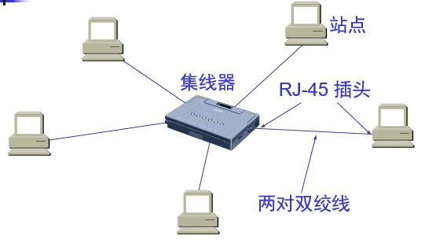
采用星形拓扑，在星形的中心则增加了一种可靠性非常高的设备，叫做集线器(hub)
集线器是使用电子器件来模拟实际电缆线的工作，因此整个系统仍然像一个传统的以太网那样运行。 使用集线器的以太网在逻辑上 仍是一个总线网，各工作站使用的还是 CSMA/CD 协议，并共享逻辑上的总线。 集线器很像一个多接口的转发器，工作在物理层。
它作用于比特，当表示一个0或者一个1的比特到达接口是，集线器总是重新生成这个比特，将其能量强度放大，并将该比特向其他所有接口传输出去， 无论何时集线器从它的一个接口收到一个比特，它向所有其他接口发送该比特的副本，如果集线器同时从两个接口接收到帧，将出现一次碰撞，生成该帧的节点必须重新传输该帧。
具有三个接口的集线器 :
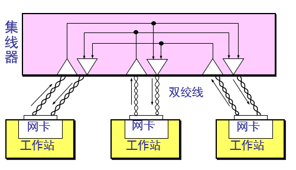
优点
使原来属于不同碰撞域的局域网上的计算机能够进行跨碰撞域的通信。
扩大了局域网覆盖的地理范围。
缺点
碰撞域增大了，但总的吞吐量并未提高。
如果不同的碰撞域使用不同的数据率，那么就不能用集线器将它们互连起来。
用集线器组成更大的局域网都在一个碰撞域中
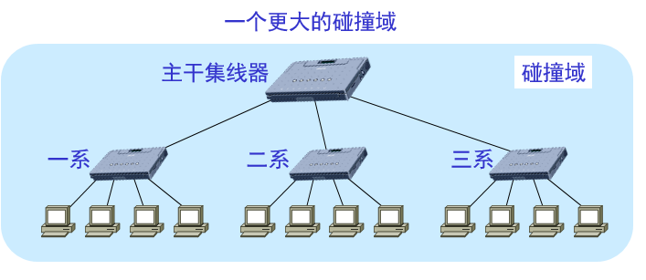
采用星形拓扑，在星形的中心则增加了一种可靠性非常高的设备，叫做集线器(hub)
集线器是使用电子器件来模拟实际电缆线的工作，因此整个系统仍然像一个传统的以太网那样运行。 使用集线器的以太网在逻辑上 仍是一个总线网，各工作站使用的还是 CSMA/CD 协议，并共享逻辑上的总线。 集线器很像一个多接口的转发器，工作在物理层。
它作用于比特，当表示一个0或者一个1的比特到达接口是，集线器总是重新生成这个比特，将其能量强度放大，并将该比特向其他所有接口传输出去， 无论何时集线器从它的一个接口收到一个比特，它向所有其他接口发送该比特的副本，如果集线器同时从两个接口接收到帧，将出现一次碰撞，生成该帧的节点必须重新传输该帧。
具有三个接口的集线器 :
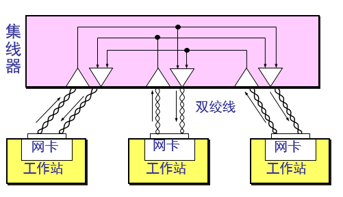
优点
使原来属于不同碰撞域的局域网上的计算机能够进行跨碰撞域的通信。
扩大了局域网覆盖的地理范围。
缺点
碰撞域增大了，但总的吞吐量并未提高。
如果不同的碰撞域使用不同的数据率，那么就不能用集线器将它们互连起来。
用集线器组成更大的局域网都在一个碰撞域中
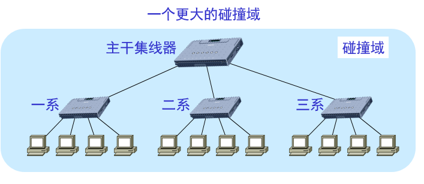
以太网帧结构
常用的以太网MAC帧格式有两种标准 ：
DIX Ethernet V2 标准
IEEE 的 802.3 标准
最常用的 MAC 帧是以太网 V2 的格式
以太网的 MAC 帧格式
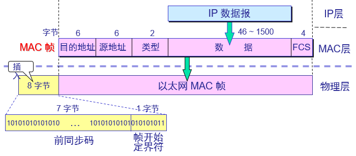
以太网 V2 的 MAC 帧格式
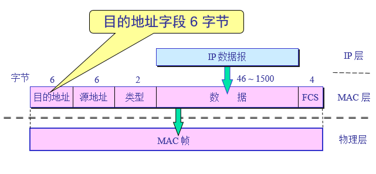
类型字段用来标志上一层使用的是什么协议，以便把收到的 MAC 帧的数据上交给上一层的这个协议。
数据字段的正式名称是 MAC 客户数据字段,最小长度 64 字节 18 字节的首部和尾部 = 数据字段的最小长度
当数据字段的长度小于 46 字节时，应在数据字段的后面加入整数字节的填充字段，以保证以太网的 MAC 帧长不小于 64 字节。
为了达到比特同步，在传输媒体上实际传送的要比 MAC 帧还多 8 个字节
在帧的前面插入的 8 字节中的第一个字段共 7 个字节，是前同步码，用来迅速实现 MAC 帧的比特同步。第二个字段是帧开始定界符，表示后面的信息就是MAC 帧。
DIX Ethernet V2 标准
IEEE 的 802.3 标准
最常用的 MAC 帧是以太网 V2 的格式
以太网的 MAC 帧格式
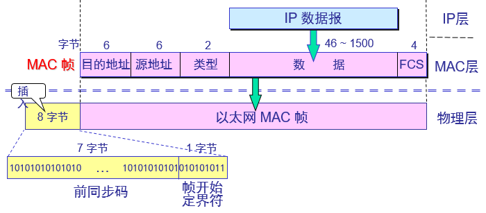
以太网 V2 的 MAC 帧格式
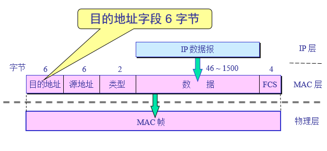
类型字段用来标志上一层使用的是什么协议，以便把收到的 MAC 帧的数据上交给上一层的这个协议。
数据字段的正式名称是 MAC 客户数据字段,最小长度 64 字节 18 字节的首部和尾部 = 数据字段的最小长度
当数据字段的长度小于 46 字节时，应在数据字段的后面加入整数字节的填充字段，以保证以太网的 MAC 帧长不小于 64 字节。
为了达到比特同步，在传输媒体上实际传送的要比 MAC 帧还多 8 个字节
在帧的前面插入的 8 字节中的第一个字段共 7 个字节，是前同步码，用来迅速实现 MAC 帧的比特同步。第二个字段是帧开始定界符，表示后面的信息就是MAC 帧。
以太网技术
链路层交换机
交换机的任务是接收链路层帧并将它们转发出链路；交换机自身对子网中的主机和路由器时透明的；也就是说主机/路由器向另一个主机/路由器寻址一个帧，顺利地将该帧发送进局域网，
并不知道某交换机将会接收该帧并将它转发到另一个节点，这些帧到达该交换机任何输出接口之一的速率可能暂时超过该接口链路的容量，为了解决这个问题，交换机输出接口设有缓存。
交换机转发和过滤
在数据链路层扩展局域网是使用交换机。交换机工作在数据链路层，它根据 MAC 帧的目的地址对收到的帧进行转发。交换机具有过滤帧的功能。当交
换机收到一个帧时，并不是向所有的接口转发此帧，而是先检查此帧的目的 MAC 地址，然后再确定将该帧转发到哪一个接口 。
交换机的过滤和转发是借助于交换机表完成。该交换机表包含某局域网还是那个某些主机和路由器但不必是全部的表项。交换机表中的一个表项包含：
1、一个mac地址；
2、通向该Mac地址的交换机接口；
3、表项放置在表中的时间；
在交换机的转发表中写入的信息除了地址和接口外，还有帧进入该交换机的时间。这是因为以太网的拓扑可能经常会发生变化，站点也可能会更换适配器 （这就改变了站点的地址）。另外，以太网上的工作站并非总是接通电源的。把每个帧到达交换机的时间登记下来，就可以在转发表中只保留网络拓扑的最新状态信息。这样就使得交换机中的转发表能反映当前网络的最新拓扑状态。
交换机收到一个帧会有3种可能的情况：目的地址为DD-DD-DD-DD-DD-DD的帧从交换机接口x到达。交换机使用DD-DD-DD-DD-DD-DD索引它的表
1、没有对于目的地址的表项，交换机向除了接口x外的所有接口前面输出缓存转发该帧的副本，即广播该帧。
2、表项将DD-DD-DD-DD-DD-DD与接口x关联，该帧在说在的局域网已经广播过了，交换机丢弃该帧执行过滤功能。
3、表项将DD-DD-DD-DD-DD-DD与接口y(y!=x)关联，该帧需要转发到与接口y相连的局域网段。交换机将该帧放到接口y前面的输出缓存完成转发功能。
交换机的过滤和转发是借助于交换机表完成。该交换机表包含某局域网还是那个某些主机和路由器但不必是全部的表项。交换机表中的一个表项包含：
1、一个mac地址；
2、通向该Mac地址的交换机接口；
3、表项放置在表中的时间；
在交换机的转发表中写入的信息除了地址和接口外，还有帧进入该交换机的时间。这是因为以太网的拓扑可能经常会发生变化，站点也可能会更换适配器 （这就改变了站点的地址）。另外，以太网上的工作站并非总是接通电源的。把每个帧到达交换机的时间登记下来，就可以在转发表中只保留网络拓扑的最新状态信息。这样就使得交换机中的转发表能反映当前网络的最新拓扑状态。
交换机收到一个帧会有3种可能的情况：目的地址为DD-DD-DD-DD-DD-DD的帧从交换机接口x到达。交换机使用DD-DD-DD-DD-DD-DD索引它的表
1、没有对于目的地址的表项，交换机向除了接口x外的所有接口前面输出缓存转发该帧的副本，即广播该帧。
2、表项将DD-DD-DD-DD-DD-DD与接口x关联，该帧在说在的局域网已经广播过了，交换机丢弃该帧执行过滤功能。
3、表项将DD-DD-DD-DD-DD-DD与接口y(y!=x)关联，该帧需要转发到与接口y相连的局域网段。交换机将该帧放到接口y前面的输出缓存完成转发功能。
自学习
交换机是一种即插即用设备，它的表是自动、动态和自治地建立的：交换机收到一帧后先进行自学习。查找转发表中与收到帧的源地址有无相匹配的项目。如没有，就在转发表中增加一个项目
（源地址、进入的接口和时间）。如有，则把原有的项目进行更新
1、交换机表初始为空；
2、对于每个接口收到的每个入帧，该交换机在其表中存储：（1）在该帧源地址字段中的mac地址；（2）该帧到达的接口；（3）当前时间。交换机以这种方式在它的表项中记录了发送节点 所在的局域网网段。如果在局域网上的每个主机最终都发送了一个帧，则每个主机最终将在这张表中留有记录；
3、如果一段时间（称为老化期）后，交换机没有接收到该地址作为源地址的帧，就在表中删除这个地址。以这种方式，如果一台PC被另一个PC替代，原来PC的mac地址最终将从该交换机表中被清除.
特性：
以太网交换机的每个接口都直接与主机相连，并且一般都工作在全双工方式。
交换机能同时连通许多对的接口，使每一对相互通信的主机都能像独占通信媒体那样，进行无碰撞地传输数据。
以太网交换机由于使用了专用的交换结构芯片，其交换速率就较高。
优点：
过滤通信量。
扩大了物理范围。
提高了可靠性。
可互连不同物理层、不同 MAC 子层和不同速率（如10 Mb/s 和 100 Mb/s 以太网）的局域网
缺点：
存储转发增加了时延。
在MAC 子层并没有流量控制功能。
具有不同 MAC 子层的网段桥接在一起时时延更大。
网桥只适合于用户数不太多(不超过几百个)和通信量不太大的局域网，否则有时还会因传播过多的广播信息而产生网络拥塞。这就是所谓的广播风暴。
1、交换机表初始为空；
2、对于每个接口收到的每个入帧，该交换机在其表中存储：（1）在该帧源地址字段中的mac地址；（2）该帧到达的接口；（3）当前时间。交换机以这种方式在它的表项中记录了发送节点 所在的局域网网段。如果在局域网上的每个主机最终都发送了一个帧，则每个主机最终将在这张表中留有记录；
3、如果一段时间（称为老化期）后，交换机没有接收到该地址作为源地址的帧，就在表中删除这个地址。以这种方式，如果一台PC被另一个PC替代，原来PC的mac地址最终将从该交换机表中被清除.
特性：
以太网交换机的每个接口都直接与主机相连，并且一般都工作在全双工方式。
交换机能同时连通许多对的接口，使每一对相互通信的主机都能像独占通信媒体那样，进行无碰撞地传输数据。
以太网交换机由于使用了专用的交换结构芯片，其交换速率就较高。
优点：
过滤通信量。
扩大了物理范围。
提高了可靠性。
可互连不同物理层、不同 MAC 子层和不同速率（如10 Mb/s 和 100 Mb/s 以太网）的局域网
缺点：
存储转发增加了时延。
在MAC 子层并没有流量控制功能。
具有不同 MAC 子层的网段桥接在一起时时延更大。
网桥只适合于用户数不太多(不超过几百个)和通信量不太大的局域网，否则有时还会因传播过多的广播信息而产生网络拥塞。这就是所谓的广播风暴。
交换机和路由器比较
虚拟局域网
虚拟局域网 VLAN 是由一些局域网网段构成的与物理位置无关的逻辑组。
这些网段具有某些共同的需求。
每一个 VLAN 的帧都有一个明确的标识符，指明发送这个帧的工作站是属于哪一个 VLAN。
虚拟局域网其实只是局域网给用户提供的一种服务，而并不是一种新型局域网。
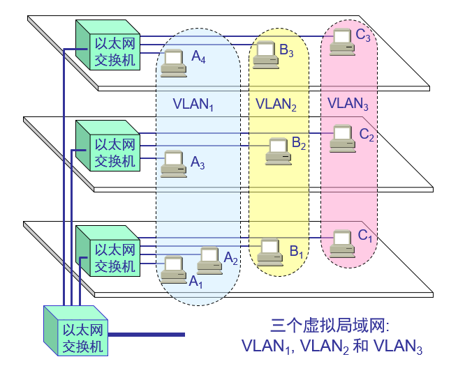
当 B1 向 VLAN2 工作组内成员发送数据时，工作站 B2 和 B3 将会收到广播的信息。 B1 发送数据时，工作站 A1, A2 和 C1都不会收到 B1 发出的广播信息。 虚拟局域网限制了接收广播信息的工作站数，使得网络不会因传播过多的广播信息(即“广播风暴”)而引起性能恶化
虚拟局域网使用的以太网帧格式：
虚拟局域网协议允许在以太网的帧格式中插入一个 4 字节的标识符，称为 VLAN 标记(tag)，用来指明发送该帧的工作站属于哪一个虚拟局域网。
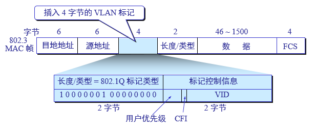
这些网段具有某些共同的需求。
每一个 VLAN 的帧都有一个明确的标识符，指明发送这个帧的工作站是属于哪一个 VLAN。
虚拟局域网其实只是局域网给用户提供的一种服务，而并不是一种新型局域网。
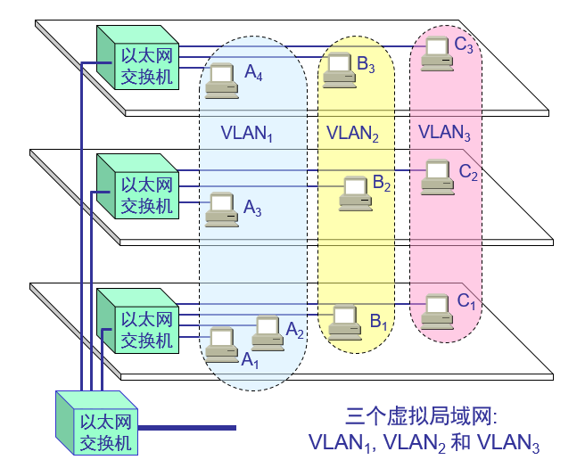
当 B1 向 VLAN2 工作组内成员发送数据时，工作站 B2 和 B3 将会收到广播的信息。 B1 发送数据时，工作站 A1, A2 和 C1都不会收到 B1 发出的广播信息。 虚拟局域网限制了接收广播信息的工作站数，使得网络不会因传播过多的广播信息(即“广播风暴”)而引起性能恶化
虚拟局域网使用的以太网帧格式：
虚拟局域网协议允许在以太网的帧格式中插入一个 4 字节的标识符，称为 VLAN 标记(tag)，用来指明发送该帧的工作站属于哪一个虚拟局域网。
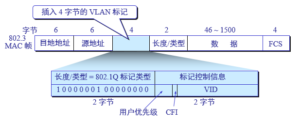